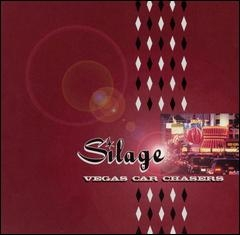
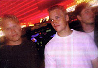

Vegas Car Chasers
"And I just want chicken and milk!"
[ Discography ] [ Archive ] [ Videos ] [ Bio ] [ About ]
Vegas Car Chasers
Vegas Car Chasers was released November 10th 1998 on Sublime / Essential Records. Vegas Car Chasers is a departure from the ska and punk fueled Watusi and features a more mature rock sound as seen in the tracks "Billboards," "Why.. Sure" and "Credit Card."
You can listen to Vegas Car Chasers on Spotify.



Track List:
Lance Black - Guitar, Vocals, Backing Vocals
Shane Black - Bass, Backing Vocals
Chuck Cummings - Drums
- Original
- Yo Tengo
- Billboards
- Why.. Sure
- Verb (feat. Knowdaverbs)
- Credit Card
- Walks & Strolls
- Great Alaskan Ninja
- Ketchup is Mustard
- Beatnik
- Vegas Car Chasers
Lance Black - Guitar, Vocals, Backing Vocals
Shane Black - Bass, Backing Vocals
Chuck Cummings - Drums
Read more about Vegas Car Chasers on Discogs. Album review on Jesus Freak Hideout. Album review on cduniverse. Album review on allmusic. Album review on Album Du Jour.